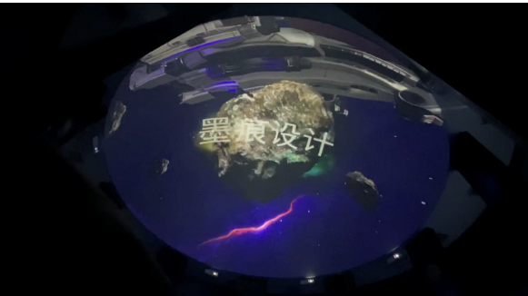
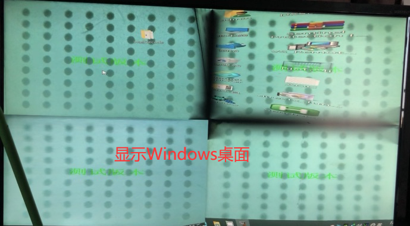
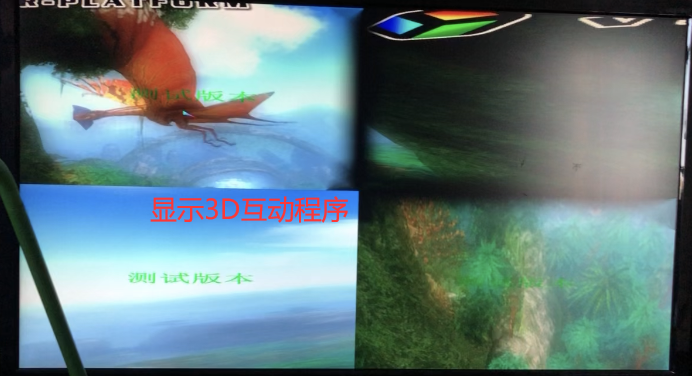

传统投影拼接痛点
Traditionally，projection screens like plane，cylindrical，multi-plane screens are all plane-like screens。They all need manual adjusting grids to align out pictures。 This can be a time consuming job，and may causing uneven pixel distribution problem。
普通平面幕、弧幕、折幕多通道拼接时，需要人工拖拽网格逐点对齐画面，耗时长、人工成本高，且画面亮度均匀度难以控制，异形曲面项目调试难度翻倍。
uvMapp 相机自动映射技术
uvMapp is a Camera based technique， for mapping the stage(multiple projection screens) coordinates into the scene(what we see) coordinates。With this technique，auto geometry registration and picture blending can be helpful to our technical staffs，no more handful work is needed。
uvMapp依托相机成像标定技术，一次性建立投影光路与幕面坐标映射关系，全自动几何校正、边缘融合。异形组合幕项目效率提升80%，极大缩短现场施工调试周期。


多类型相机兼容，支持远程调试
uvMapp support all kinds of cameras，fish-eye camera，and you can even use your phone to take pictures for the following mapping process。In other words，you can sometime finish the most of jobs remotely。
兼容普通工业相机、鱼眼广角镜头，手机拍照即可完成标定；工程师无需亲临现场，客户现场拍照回传，办公室即可完成全部校正调试工作。
双模式支持：视频播放 / Windows桌面融合
uvMapp can be used in video playing or Windows desktop mapping。So，you can just run your Windows APP without any modification in a perfect projection mapping environment。That is what we called WYSIWYG。UvMapp provide a virtual rectangle scene for your APP，so as the Windows desktop。
软件同时支持视频素材播放、Windows全局桌面融合两种模式，沉浸式影片、交互程序均可所见即所得。内置虚拟画布参数Scene_w/Scene_h，可自动/手动设置输出分辨率，无需提前预处理视频与交互程序。

